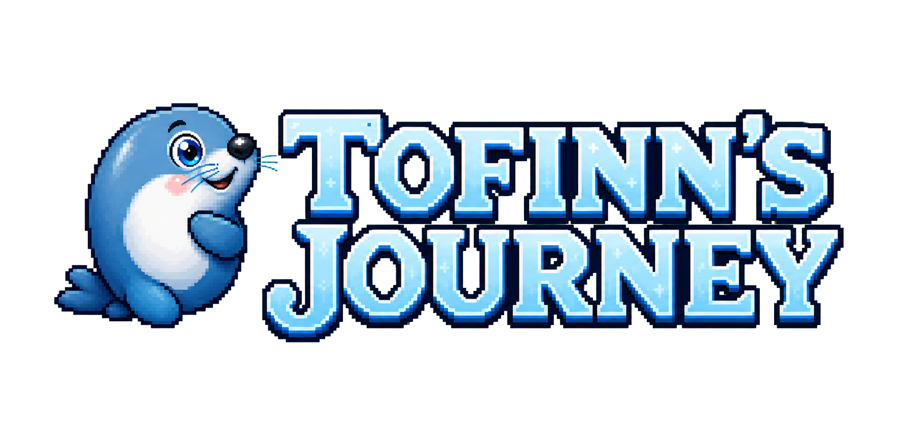

Eight worlds, 24 stages
A complete progression with traversal, rescue, environmental tasks, encounters, and a finished ending.
Premium mobile game

A small seal, a changed pirate, and eight Arctic worlds built around one unusual idea: victory can end cruelty without inheriting it.
The journey
Tofinns Journey follows Tofinn and Eric through a complete platform adventure shaped by courage, trust, rescue, and repair. The story moves from first contact and survival into trials, pursuit, infiltration, confrontation, and an aftermath in which damage must be answered rather than merely defeated.
The game is designed for players aged approximately ten and above who enjoy animal characters, readable objectives, collectibles, and short mobile play sessions without losing the feeling of a complete authored journey.
Included experience
A complete progression with traversal, rescue, environmental tasks, encounters, and a finished ending.
Four difficulty profiles are planned so younger, casual, and experienced players can remain inside the same story.
Three local profiles, automatic progress, replayable stages, and normal offline play after installation.
Original music, storybook-painted Arctic environments, collectible prize cards, and wallpapers earned through play.
One purchase includes the complete game. There is no advertising, subscription, consumable currency, energy timer, loot box, or required in-app purchase.
Release position
The launch target is February 2027 on the Apple App Store and Google Play. English is the initial language, with player-facing text structured for later localisation. Final availability remains subject to device testing, ratings, store review, and release-quality validation.
For publishing, licensing, play-testing, press, or commercial conversations concerning Tofinns Journey.